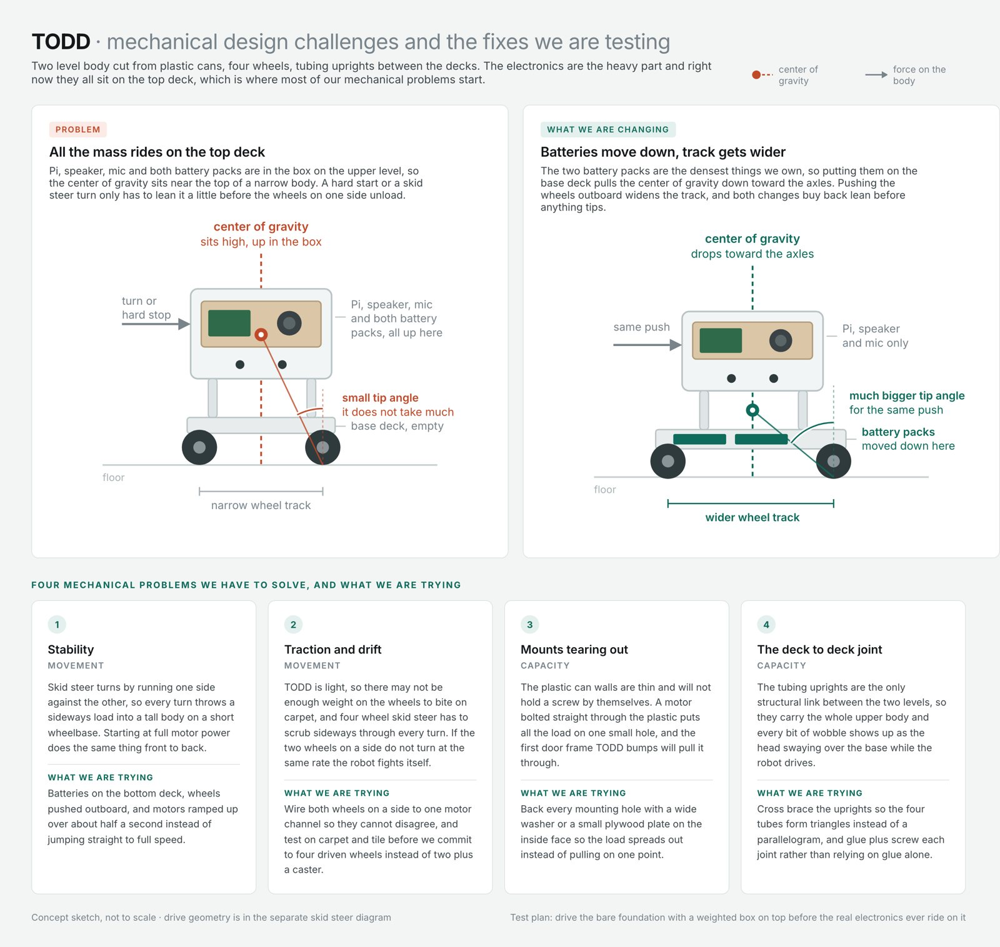

TODD, a Voice Controlled Robot
Our team is building a robot from parts, with no kit, that you can talk to. TODD (Technology and Operations Delivery Droid) listens for spoken commands, drives where you tell it, and answers simple questions out loud, all on a budget of about forty dollars. The point of the project is to see how an information system actually works when the data comes in as a voice instead of a form.
I’m responsible for the speech side. It runs on a used Raspberry Pi 3B+ with an offline speech recognizer for the drive commands, so moving the robot never depends on campus WiFi, and only open ended questions go out to an AI model for an answer. I also make the weekly design sheets, like the one here.
Outcome so far Part I, covering our objectives, feasibility, cost, and build plan, is finished. The robot gets demonstrated live in December.
What I learned The hard part of a robot isn’t the code, it’s the constraints. A school network that blocks devices from talking to each other changed our whole design before we wrote a single line.